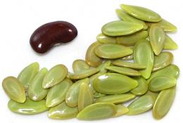

This shrub or small tree (to 65 feet) is native to southern Mexico, from Puebla south through the Yucatán region, but is now naturalized throughout the tropics. In the 1970s and 1980s it was promoted as a "miracle tree" due to its fast growth (more than 20 feet in two to three years, and usefulness as animal fodder, firewood, charcoal, fiber, green manure, erosion control, general biomass, and human food. It is now a serious invasive in some regions. It can grow as far north as Southern California but do not fruit well here.
In the stage these are commonly sold here in California, the pods are about 10 or 11 inches long and just a shade less than 1 inch wide. The beans themselves average about 0.50 inch long and 0.32 inch wide. The pods will be green with speckles on the shade side and a reddish brown on the sunny side. Like most beans, they are slightly toxic when mature, but young beans can be eaten raw. Some describe the taste as "garlicky", but to me, it is reminiscent of Sataw Beans, but not as extreme - perhaps that's why they've caught on in Southeast Asia where sataw beans are eaten. The clusters of flat pods are even similar, except sataw pods are twisted, not straight.
More on Bean Varieties
(large page).
 These beans are often used in sauces to impart a unique flavor, but are also eaten as a snack. Mature seeds from dry pods are often roasted and salted for a snack called cacalas. While young seeds are eaten raw, I prefer the slightly different flavor they have when lightly cooked. Very young pods may be edible, but not the ones we get around here. In Java these beans are eaten in salads with peanut sauce and in spicy fish dishes. In Laos and Thailand they are used in green papaya salads, but I don't yet know the methods of preparation in those regions.
Solution: Since you'll probably be at least lightly cooking them anyway, cut the pods in half so they'll fit in a pot of rapidly boiling water. Scald them for about 4 minutes - they'll peel apart very easily. It's still tedious, so do it when you have time. Of course it's easier in the Yucatán because there they have obedient children anxious to help. Yours will probably call Children's Services if you try to pry them away from their texting and video games.